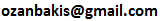

Economist, Bahcesehir University and Betam
My full CV is here. You can find further information on my research on my ResearchGate and Google Scholar pages.
I received my PhD in Economics from University of Paris 1 Pantheon-Sorbonne in 2006. Before joining Betam as senior researcher in 2016 I worked, respectively, at Galatasaray University and Sabanci University. I did my postdoc at University of Montreal in 2011. My recent research is focused on firm dynamics with a particular focus on SME problems and innovation, productivity, labor market dynamics and short-run GDP growth forecasting. I consulted for the World Bank, the Turkish Statistical Institute, and some other private sector institutions in the past.
I am an R enthusiast. I give R courses at various levels, from introduction to advanced classes.
Bahçeşehir University and Betam
Osmanpaşa Mektebi Sokak No:4-6
34353 Beşiktaş, Istanbul / Turkey
Tel: +90 212 381 0436

BA: Galatasaray University, 2001
PhD: University of Paris 1 Pantheon-Sorbonne, 2006
Disclaimer: The views expressed on this website are entirely those of the author. They do not necessarily represent the views of the Bahçeşehir University or Betam.